Pulizia interni auto professionale a Torreglia, alle porte di Padova: sedili in tessuto, pelle e Alcantara, moquette, volante, plastiche e bocchette tornano puliti in profondità, fino ai punti che normalmente non si vedono.
Il detailing interni svolto presso Lorenzo Garage Detailing a Torreglia (Padova) non è una semplice aspirata: è una pulizia profonda dell'abitacolo, superficie per superficie, con prodotti e attrezzature diversi per ogni materiale, sia sulle auto di tutti i giorni sia sulle auto di lusso e sportive.
Quando serve smontiamo i sedili per raggiungere la moquette e il pianale sottostante, dove si accumula lo sporco che un normale lavaggio interni non toglie.
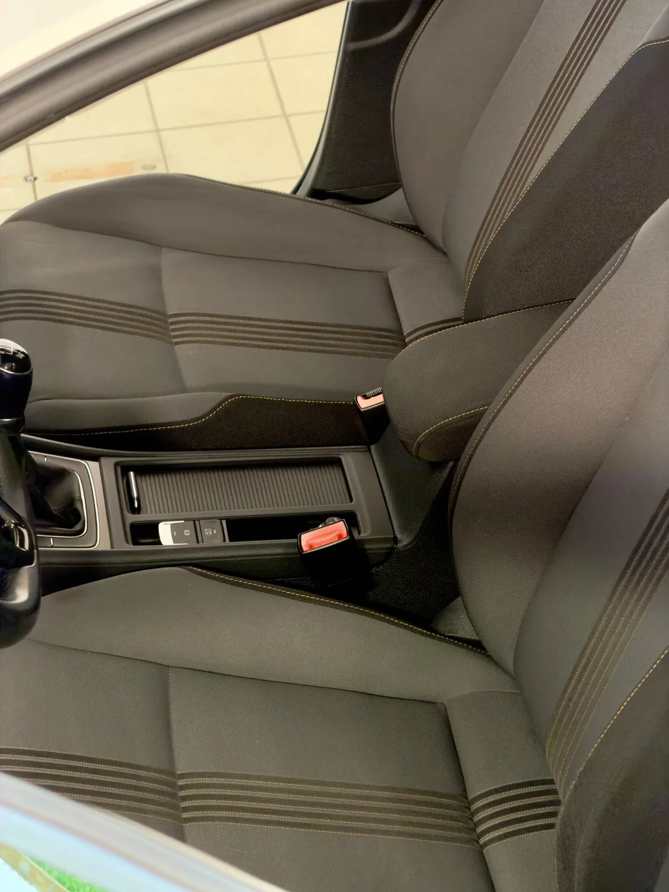
Foto reali di un lavoro svolto in atelier: lo stesso abitacolo prima dell'intervento e a lavoro finito.
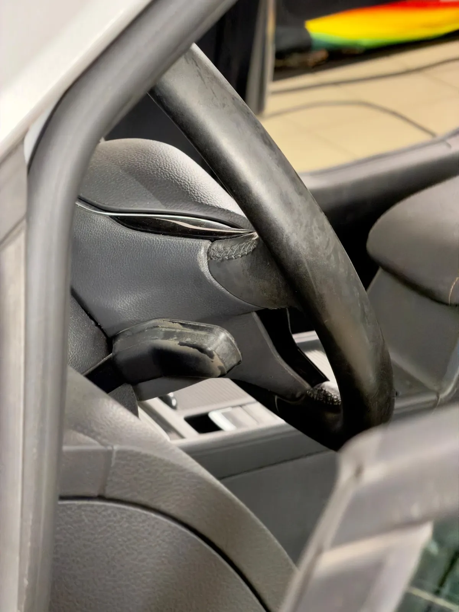
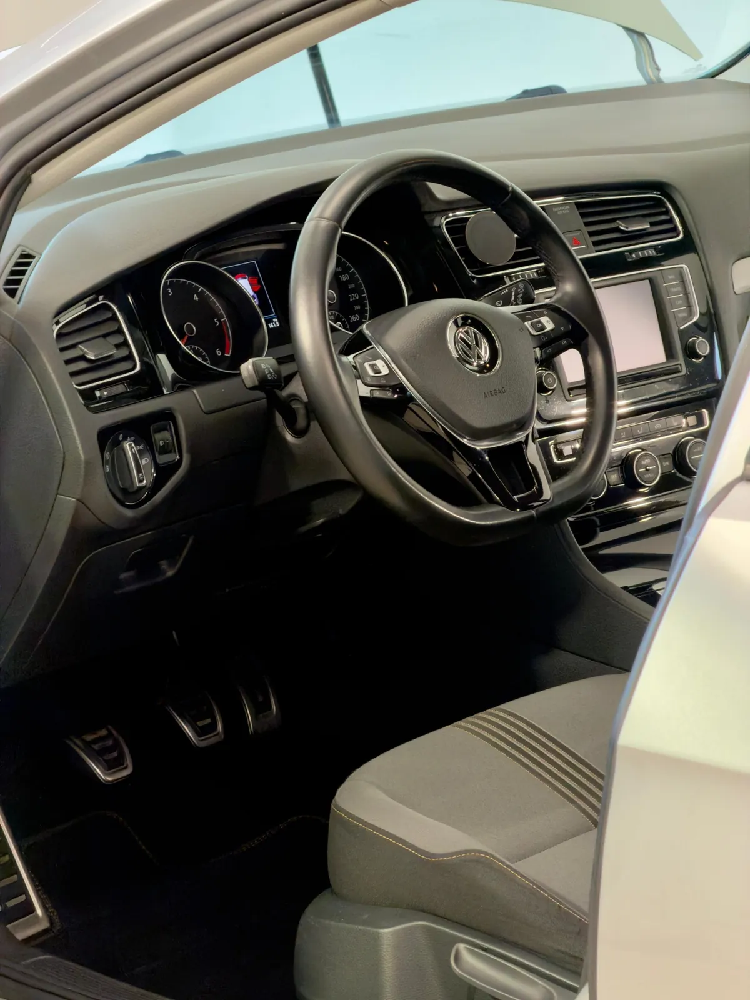
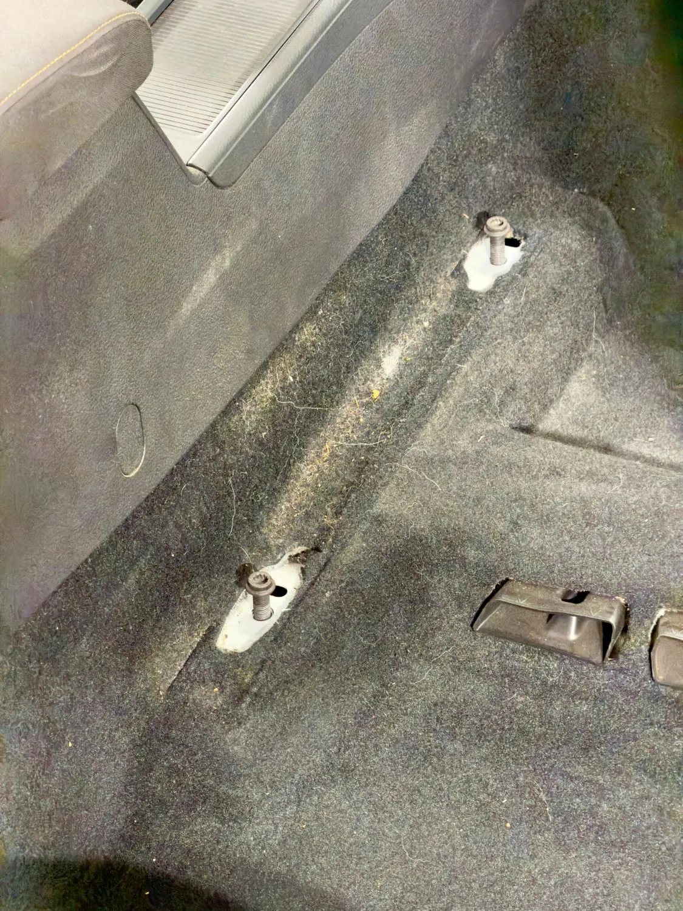
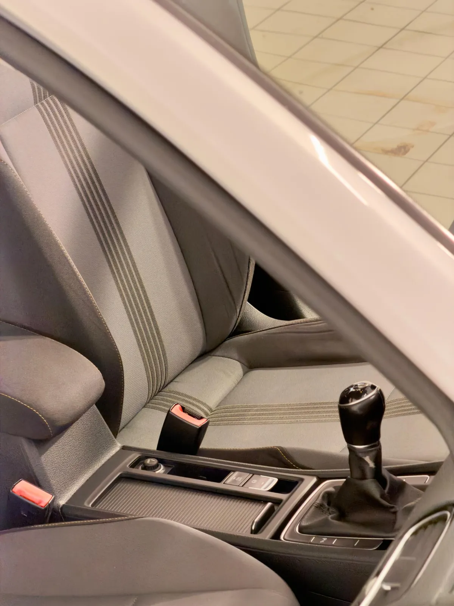
Spazzole, schiuma ed estrazione: ogni materiale ha il suo metodo.
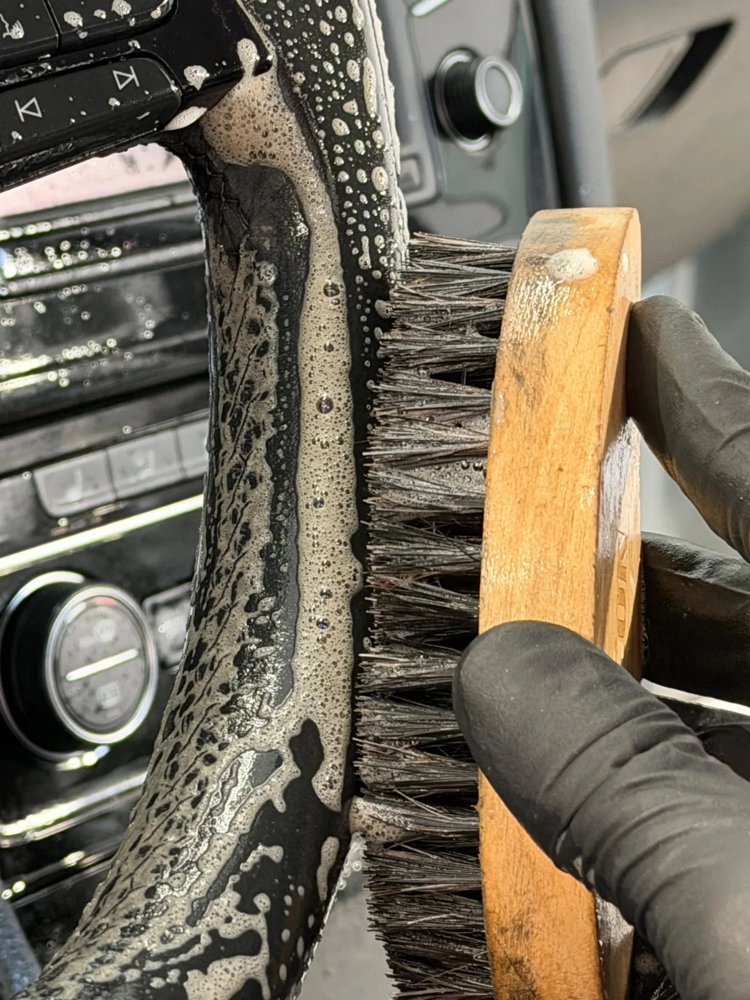
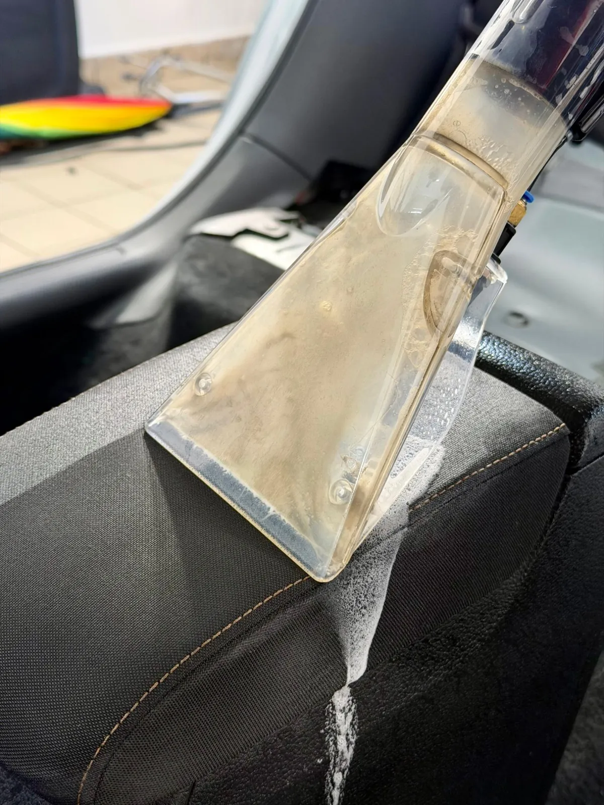
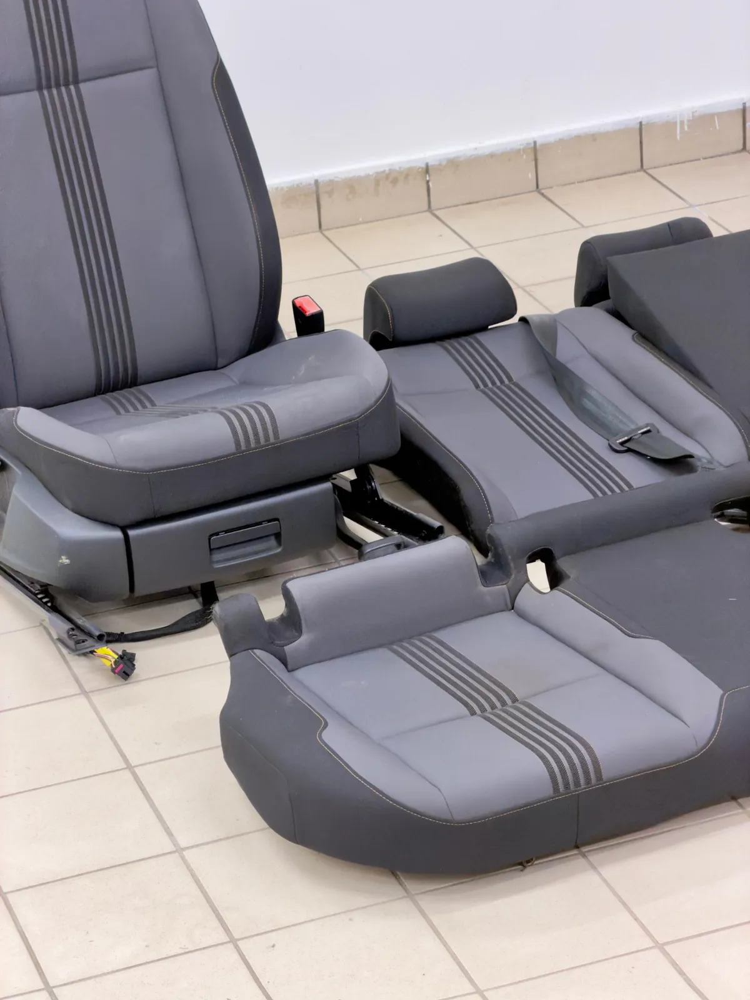
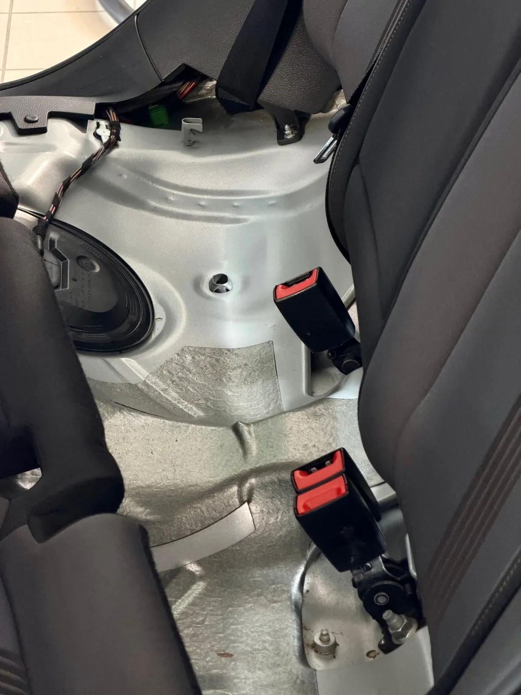
Ogni abitacolo è diverso: valutiamo insieme il livello di intervento.
I tempi dipendono dallo stato dell'abitacolo e dal livello di intervento: una pulizia di mantenimento è più rapida di un detailing completo con smontaggio dei sedili. Li concordiamo in fase di preventivo.
Prezzo indicativo: a partire da 200 €. Il prezzo varia facilmente in base alle condizioni e alla vettura, perché ogni lavoro è unico. Incidono: dimensioni dell'abitacolo, tipo di rivestimenti, grado di sporco ed eventuale smontaggio dei sedili. Contattaci per una consulenza gratuita e un preventivo su misura.
Sedili anteriori e posteriori, battute delle porte e vano motore a lavoro concluso. Plastiche appiccicose? Scopri il ripristino soft touch. Altri lavori nel book fotografico.
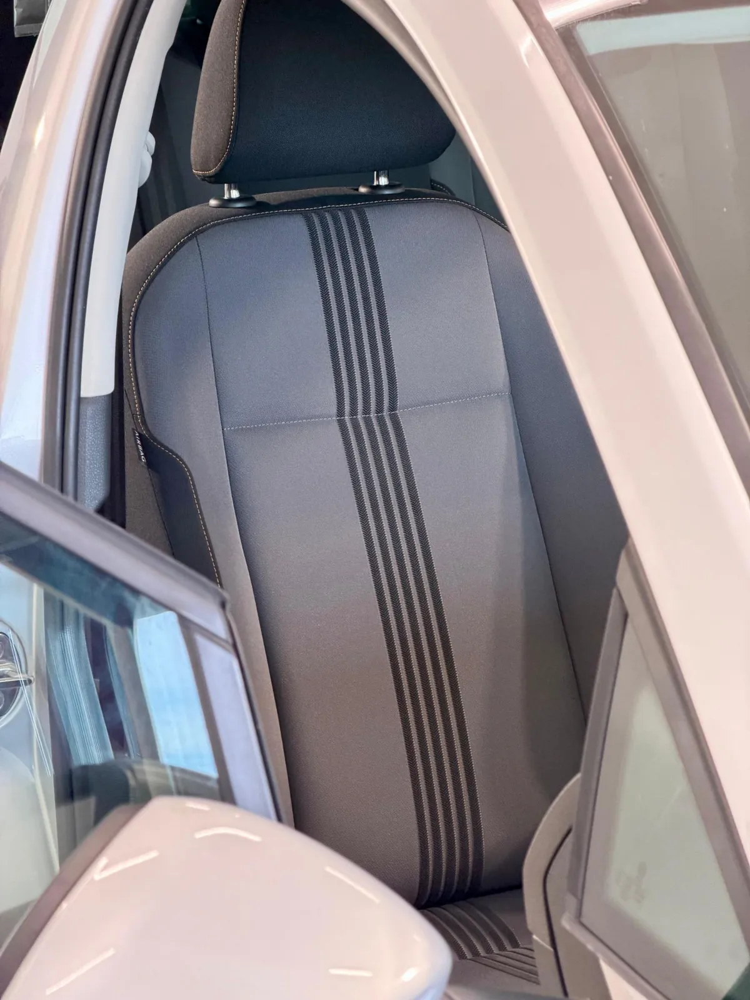
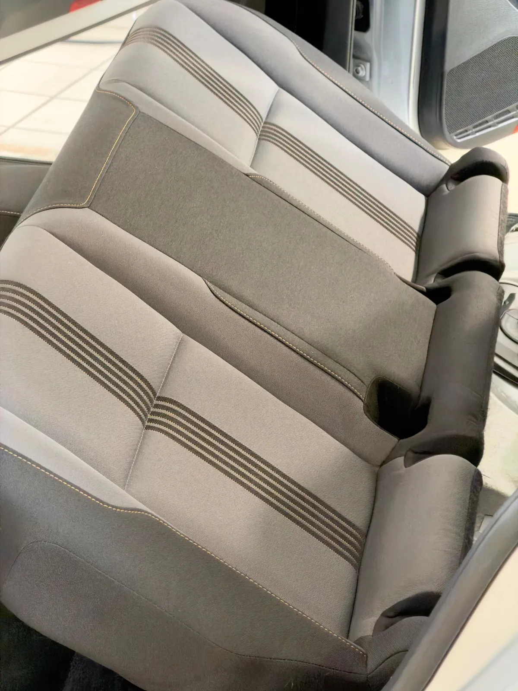
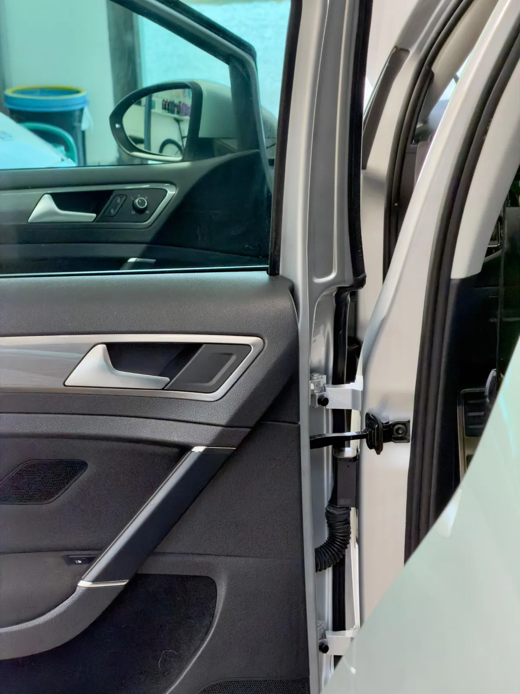
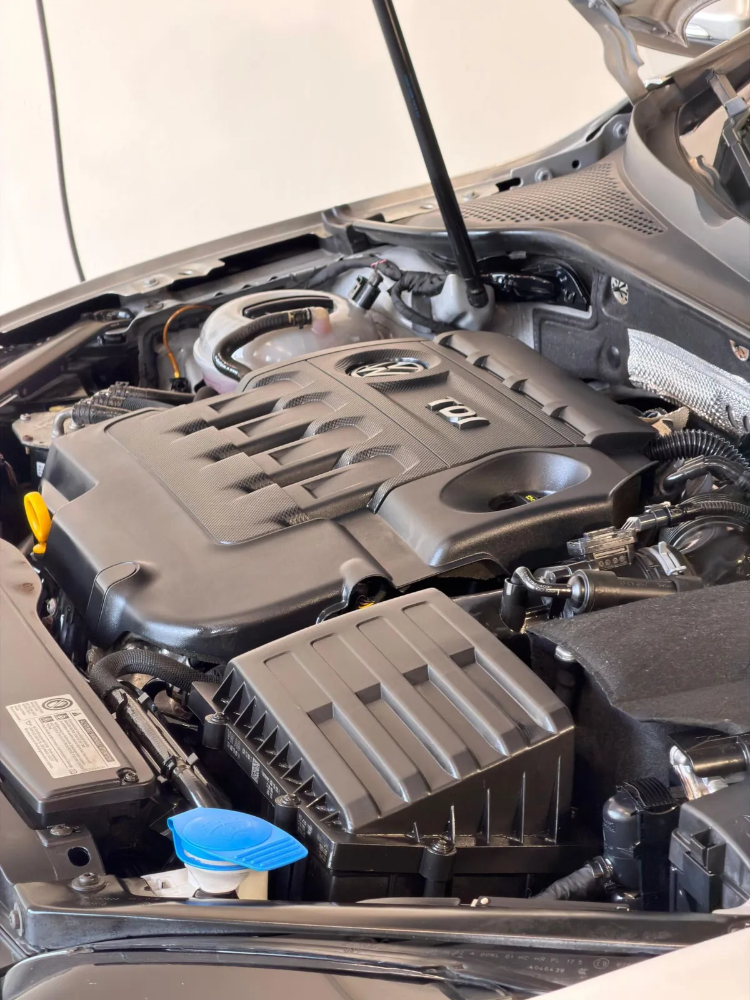
A partire da 200 €, ma il prezzo varia facilmente in base alle condizioni e alla vettura. Incidono le dimensioni dell'abitacolo, il tipo di rivestimenti (tessuto, pelle, Alcantara), il grado di sporco e se è necessario smontare i sedili. Ogni lavoro è unico: la consulenza è gratuita.
Con il lavaggio a iniezione-estrazione. Il detergente viene spruzzato nelle fibre e subito aspirato insieme allo sporco: il tessuto viene pulito in profondità senza restare inzuppato e si asciuga in tempi brevi.
Per pulire davvero tutto l'abitacolo. Sotto i sedili e lungo le guide si accumulano polvere, briciole e sporco che non si raggiungono con un normale aspirapolvere. Smontando i sedili possiamo trattare moquette, pianale e sedili separatamente.
Sì, con prodotti e spazzole specifici per ogni materiale. Il volante in pelle viene pulito con schiuma delicata e spazzola a setole naturali per rimuovere unto e sporco dai pori; per l'Alcantara è disponibile anche un trattamento idrorepellente.
Riduce in modo deciso gli odori causati da sporco e residui. Il lavaggio profondo di tessuti e moquette e l'igienizzazione dell'abitacolo rimuovono la causa degli odori invece di coprirli con un profumo.
Sì, su richiesta. Battute delle porte, cerniere e vano motore vengono puliti e rifiniti per completare il detailing: sono dettagli che fanno la differenza, soprattutto in vista di una vendita.
Detailing interni per Padova, Abano Terme, Torreglia e provincia. Prenota una consulenza gratuita.
Scrivici su WhatsApp